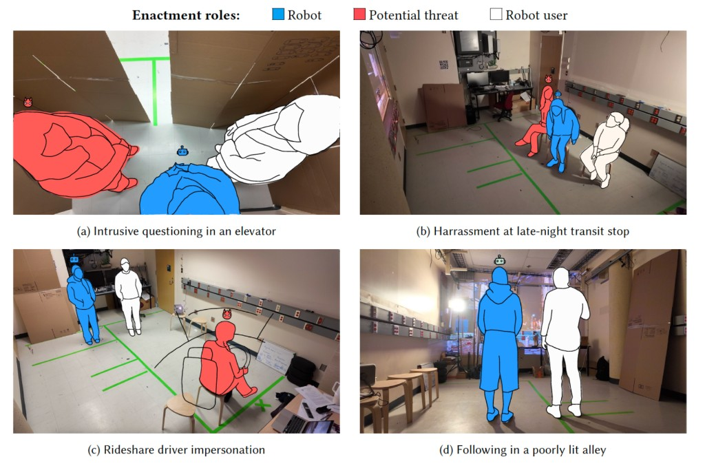

A woman is walking home alone when a stranger starts bothering her. A personal security robot could step in to help, but what if she doesn't want it to? Or what if it does nothing when she really needs help?
We wanted to explore how robots could protect women without taking away their control over the situation. We invited 15 women and female-identifying participants to act out six everyday safety scenarios with a researcher playing the robot. Through these enactments, we explored when women wanted a robot to step in, when they preferred to handle things themselves, and how a robot might appropriately act.
How we did it.
User enactment is a research method that lets people experience and react to imagined technologies without building a working prototype. Here's how we built our user enactment sessions:
- Scenarios: Six everyday safety situations, including street harassment, being followed, intrusive questioning, and scams, etc.
- Environment: Projected videos, background sounds, lighting, and simple props (e.g. a cardboard elevator) helped recreate familiar public space.
- Actors: Two researchers played the robot and a potential threat. Both followed scripts informed by real-world harassment research, with room to improvise as situations unfolded.
- Participants: Each participant experienced three scenarios, lasting roughly 3-5 minutes each. They were encouraged to react as they would in real life, without knowing exactly how each encounter would unfold. Many participants told us the experiences felt surprisingly real.

Responsiveness.
Participants wanted very different things from the robot, even in similar situations. Looking more closely at these differences, we identified a common pattern: responsiveness.
Responsiveness refers to the user's ability to understand what's happening, decide what to do, and act on that decision. When our participants felt capable of handling a situation, they preferred the robot to respect their choices and their ability to act. When their ability to respond became limited, they wanted more support. And when they could no longer respond effectively, they may want the robot to completely take control. This suggests that robot autonomy can be designed to support user agency when adapted to the user's responsiveness.
Reflections.
Responsiveness may seem like a personal attribute by definition. But as much as it is individualized, it also is shaped by the material world. Some of our participants described having to refuse someone repeatedly before being taken seriously. Others questioned their own ability to judge certain situations, or worried about being perceived as a "crazy bitch." What constrained what the woman felt she was able to do? I find this unsettling.
In user-centered HCI, we often talk about designing technology around people's needs and capabilities, but those needs and capabilities don't exist outside of society. Thus understanding people's needs and capabilities is only part of the story. We also need to understand what shaped them, and whether those conditions should be accepted or challenged.
It is really up to the designers to reproduce those societal conditions, or to do the right thing.